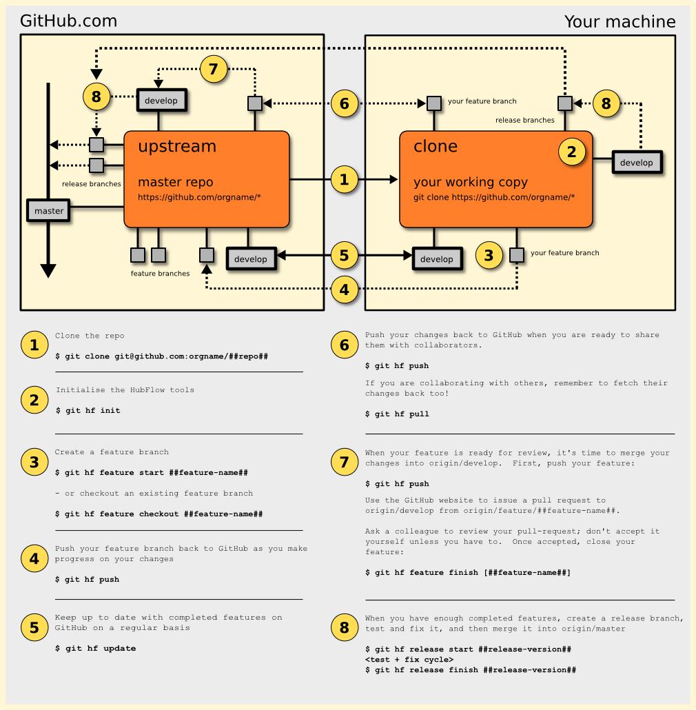

Commit often, perfect later, publish once


Hello, git
A completely ignorant, childish person with no manners.
$ /dont-panic/

$ git <verb>
$ git help <verb> $ git <verb> --help
$ git init Initialized empty Git repository in /scratch/.git/ $ echo hello, world > hello.txt $ git add hello.txt $ git commit -m "my first commit!" [master (root-commit) ad9a291] my first commit! 1 file changed, 1 insertion(+) create mode 100644 hello.txt
$ git log --patch commit ad9a291416165bb95a541321a7acf9cef9731c1d Author: Alexander Groß <agross@therightstuff.de> Date: Sat Feb 6 12:41:24 2010 +0100 my first commit! diff --git a/hello.txt b/hello.txt new file mode 100644 index 0000000..4b5fa63 --- /dev/null +++ b/hello.txt @@ -0,0 +1 @@ +hello, world
Content Lifecycle

Staging Area = Power
 It allows you to do partial operations with
It allows you to do partial operations with git {add|checkout|reset HEAD} --patch
Branching
Simple history

There is another pointer: HEAD

Creating a branch
$ git branch testing <where>(
<where> defaults to HEAD)

Current branch = where HEAD is
$ git checkout testing

A Shortcut
$ git checkout -b <name> <where> == $ git branch <name> <where> && git checkout <name>
Advancing the testing branch
$ git commit -am "work on testing"

Back to master
$ git checkout master

Advancing the master branch
$ git commit -am "work on master"

Integration
Your options:
Visualizing a "Git Merge" pic.twitter.com/RQJ2AV7JRQ
— David Rousset (@davrous) August 20, 2016
Diverged History

git merge
$ git checkout master
$ git merge experiment
 This is a recursive merge, as it integrates two diverged branches.
This is a recursive merge, as it integrates two diverged branches.
Undoing the merge
$ git reset --hard C3
Linear history

A git merge special case
$ git checkout master
$ git merge experiment
 This is a fast-forward merge as the master pointer can be moved from C3 to C4 without losing commits reachable from master.
This is a fast-forward merge as the master pointer can be moved from C3 to C4 without losing commits reachable from master.
Controlling git merge behavior
$ git merge --ff-only
Enforces a fast-forward merge, aborts if history is diverged.
$ git merge --no-ff
Enforces a recursive merge, even if a fast-forward merge would be possible.
Controlling git merge recursive strategy
$ git merge --strategy-option ours
Prefer our changes when encountering conflicts.
$ git merge -X theirs
Prefer their changes when encountering conflicts.
Even more options
-
git cherry-pick <SHA>
Pick a single commit from another branch. -
git merge --squash topic
Apply commits from the topic branch squashed into a single commit on top ofHEAD. -
git merge feature/login bugfix/42 experiment/foo
Integrate any number of non-conflicting branches with a single merge commit. -
git merge --strategy=ours obsolete
Integrate history, but ignore (undo) all changes introduced by the obsolete branch.
git rebase
$ git checkout experiment
$ git rebase master
 Commit C4 is applied on top of master as C4'.
Commit C4 is applied on top of master as C4'.
$ git rebase origin/master pic.twitter.com/pAHtrPrm84
—
Alejandro AR (@kinduff)
January 16, 2015
git rebase -i ;) pic.twitter.com/Qy2k7Q0EQJ
—
nixCraft (@nixcraft)
May 7, 2017
This is from a project I am working on. #git
#rebase vs. #merge
pic.twitter.com/TRgsq7BSin
—
MiCHΛΞl (@michaelhenke)
April 6, 2015
Complex Rebase
How to get rid of C3 when rebasing client on master?
Complex Rebase
…is easy when you know the syntax$ git rebase --onto master server client

Branching Strategies
Feature Branches Provide Isolation

Again, you have two options:
git mergeif you want to keep information about integrated branchesgit rebaseif you do not care
git-flow

HubFlow
Gerrit

Workflows
Our 'Always amend commit and force push' model increased communication quality in our team a lot.
#GoldenCommit
@R0MMSEN
—
Marco Heimeshoff (@Heimeshoff)
July 13, 2017
Centralized

Integration Manager

Benevolent Dictator

Git Internals
Commit = Trees + Blobs

History = Linked Commits

Pointers Everywhere

Pointers Everywhere

Delta Storage

Snapshot Storage

Documentation
Written by Experts

git-rebase - Forward-port local commits to the updated upstream head